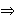

gdje je
 Jacobijev simbol, onda n zovemo
Eulerov pseudoprosti broj u bazi b (ili
epsp(b)).
Jacobijev simbol, onda n zovemo
Eulerov pseudoprosti broj u bazi b (ili
epsp(b)).
 b
(mod p) ima rješenja. U protivnom, kažemo da je b
kvadratni neostatak.
Legendreov simbol
se definira ovako:
= 1 ako je b
kvadratni ostatak modulo p;
= -1 ako je b
kvadratni neostatak modulo p;
= 0 ako p dijeli
b.
b
(mod p) ima rješenja. U protivnom, kažemo da je b
kvadratni neostatak.
Legendreov simbol
se definira ovako:
= 1 ako je b
kvadratni ostatak modulo p;
= -1 ako je b
kvadratni neostatak modulo p;
= 0 ako p dijeli
b.
Neka je n neparan broj i n = p1 · · · pk njegov rastav na (ne nužno razlièite) proste faktore. Tada se Jacobijev simbol definira sa = Ako je n prost, onda se Jacobijev i Legendreov simbol podudaraju. Važno svojstvo Legendreovog simbola je Eulerov kriterij:
|
Definicija: Ako je n neparan složen broj, te b
cijeli broj takav da je (b,n) = 1 i vrijedi
gdje je
Jacobijev simbol, onda n zovemo
Eulerov pseudoprosti broj u bazi b (ili
epsp(b)).
|
Kvadriranjem relacije (**) dobivamo bn -1
1 (mod n),
tj. relaciju (*). To znaèi da je svaki epsp(b) ujedno i psp(b). Meðutim , obrat ove tvrdnje ne vrijedi.
Primjer 4.2: Vidjeli smo u Primjeru 4.1 da je 91 pseudoprost u bazi 3. Meðutim,
345
7297 . 27
27 (mod 91),
1045
100015
(-1)15
-1 (mod 91)
i (10 / 91) = -1.
 Zn : (b,n) = 1}.
Tada je |Zn*| =
φ(n). Neka je
nadalje
Zn : (b,n) = 1}.
Tada je |Zn*| =
φ(n). Neka je
nadalje
Pn = { b
Zn* :
b(n -1)/2 (mod n) }.
| Teorem 4.2: Za sve neparne složene brojeve n vrijedi |Pn| ≤ φ(n)/2. |
Uoèimo važnu razliku izmeðu Teorema 4.1.3) i 4.2. Naime, kod Eulerovih pseudoprostih brojeva nema analogona Carmichaelovih brojeva, veæ za svaki složen broj n, relacija (**) nije zadovoljena za barem pola moguæih baza.
Prije dokaza Teorema 4.2, dokažimo dvije leme. Koristit æemo oznaku: νm(t) = najveæi cijeli broj k takav da mk dijeli t.
Lema 4.1: Neka je n =
p1 . . .
pr neparan broj,
te neka je
ν = min {
ν2
(pi) : i = 1, ... , r },
s = ∏i
(m, φ(pi
. . .
pr neparan broj,
te neka je
ν = min {
ν2
(pi) : i = 1, ... , r },
s = ∏i
(m, φ(pi ).
Tada vrijedi: ).
Tada vrijedi:
(1) Kongruencija xm
(2) Kongruencija xm
(3) Ako kongruencija xm
|
Dokaz: Neka je gi primitivni korijen modulo
pi,
tj. gia
" ALIGN=MIDDLE>
1 (mod pi)
za a < φ(pi) =
pi
(1 - 1/pi ).
To znaèi da za svaki x
{ 1, ... ,
pi - 1 }
postoji j takav da je
gij
x
(mod pi).
Oznaèimo taj j s
indi x.
Sada je kongruencija
xm
c (mod n)
ekvivalentna sustavu kongruencija
m · indi x
indi c (mod
φ(pi)),
za i = 1, ... , r.
(4.1)
m · indi x
0 (mod
φ(pi)),
za i = 1, ... , r.
))
rješenja. Stoga je ukupan broj rješenja sustava jednak s.
Za c = -1 je indi (-1) =
φ(pi)/2,
pa sustav (4.1) postaje
m . indi x
φ(pi)/2 (mod
φ(pi)),
za i = 1, ... , r.
))
dijeli φ(pi)/2.
Odavde imamo da
(22(m) m1,
pii -1 .
22(p -1) q1) dijeli
pii -1 .
22(p -1)-1 q1,
gdje su m1 i q1 neparni brojevi.
No, ovo je oèito ekvivalentno s
ν2(m)
< ν2(pi-1) za
i = 1, ... , r, tj. s
ν2(m)
< ν.
|
Lema 4.2: Neka je n neparan broj, te
p1, ... pr
svi razlièiti prosti faktori od n. Tada je
gdje je
δn
{1/2, 1, 2}.
|
Dokaz: Neka je
Tada je Pn = Mn+. Iz Leme 4.1 imamo: |Kn+| = ∏i ((n-1)/2, pi -1). S druge strane, Mn+ = (Kn+ Ln+) (Kn- Ln-). Ako je Kn-
Ln-,
.
{1/2, 1, 2}.
Kn-
Ln-,
.
{1/2, 1, 2}.
Dokaz Teorema 4.1: Neka je n =
.
Iz Leme 4.2 slijedi
Sada možemo pretpostaviti da je
αi = 1,
tj. n = p1 · · ·
pr, r
≥ 2.
Pretpostavimo da tvrdnja teorema ne vrijedi. Tada bi bilo
Pn =
Zn*.
Neka je g primitivni korijen modulo p1
(ili bilo koji kvadratni neostatak modulo p1).
Po Kineskom teoremu o ostatcima, možemo naæi a
Zn*
takav da je a
g
(mod p1) i a
1
(mod n/p1). Buduæi da je
Zn* =
Pn, to je
a(n-1)/2
(a/n)
(mod n). Meðutim, (a/n) =
(a/p1)
(a/(n/p1)) =
(g/p1) = -1. Zato je
a(n-1)/2
-1
(mod n/p1), što je u
suprotnosti s a 1
(mod n/p1).
|
Korolar 4.1: Neka je
n 3
(mod 4) složen broj s r razlièitih prostih faktora. Tada je
|Pn|
|
Dokaz: Iz relacije (4.2) imamo:
 10-15,
2-100
10-30).
10-15,
2-100
10-30).
Solovay-Strassenov test je primjer tzv. Monte Carlo algoritma koji uvijek daje odgovor, ali on može biti netoèan. Drugi tip vjerojatnosnog algoritma je Las Vegas algoritam koji ne daje uvijek odgovor, ali kada ga da, onda je odgovor sigurno toèan. Primjer takvog algoritma smo vidjeli kod faktorizacije RSA modula n ako je poznat tajni eksponent d.
Napomena: Navest æemo svojstva Jacobijevog simbola koja se
koriste u njegovom raèunanju:
(1)
a b
(mod n) " ALIGN=TOP>
(a/n) = (b/n)
(2)
(-1/n) = (-1)(n -1)/2,
(2/n) = (-1)(n -1)/8
-1)/8
(3) (ab/n) = (a/n) (b/n)
(4) (m/n) = -
(n/m) ako je m
n
3 (mod 4), a (m/n) = (n/m)
inaèe.
| Web stranica kolegija Kriptografija | Andrej Dujella - osobna stranica |
 φ(n)/2r -1.
φ(n)/2r -1.